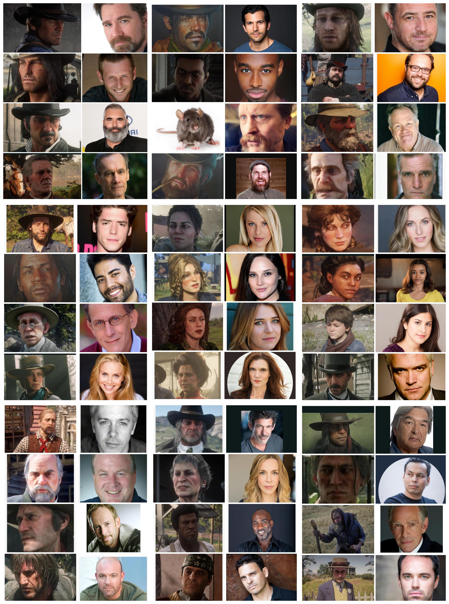

Curiosidades sobre Red Dead Redemption 2
1. O mundo reage ao seu visual
O crescimento da barba do personagem reflete o passar do tempo e suas escolhas. Você pode deixá-la crescer naturalmente ou apará-la em barbearias, moldando sua aparência conforme seu estilo de vida. Uma barba longa e desleixada pode passar a imagem de alguém rude ou fora da lei, enquanto uma bem cuidada pode transmitir respeito e disciplina. Seu visual também influencia como os NPCs interagem com você.
2. O mundo reage às suas ações
As ações do jogador afetam o comportamento dos NPCs e o desenrolar da história. Se você for muito violento ou criminoso, as pessoas te temerão e evitarão. Se for bondoso, ganhará respeito e ajuda de estranhos.
3. Mais de 1.000 atores de voz
O jogo tem um elenco enorme: foram gravadas vozes de mais de mil personagens, com centenas de horas de diálogo. Grande parte disso é dinâmica e depende de como você interage com o mundo.

4. Cavalos têm personalidade e vínculo com o jogador
Cada cavalo tem comportamentos únicos, e o nível de vínculo com Arthur afeta como ele responde em situações perigosas. Eles também podem morrer permanentemente, o que torna o cuidado com eles essencial.
5. Ambientação e detalhes impressionantes
Desde rastros na neve, limpeza de armas, até reação dos testículos do cavalo à temperatura (sim, isso mesmo!), o jogo é incrivelmente detalhado. Tudo foi feito para criar um mundo mais realista e imersivo possível.